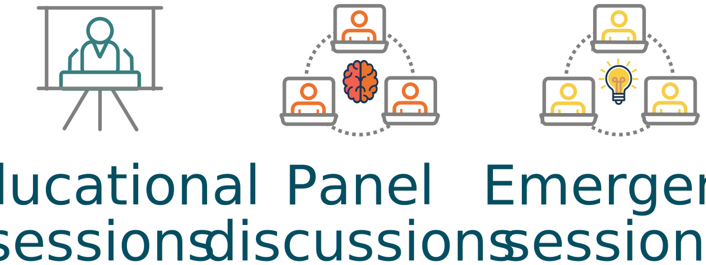
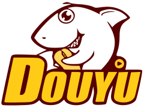

Welcome to the OSR!

The OS-SIG Open Science Room (OSR) is a conference within a conference. It is part of the Organisation for Human Brain Mapping (OHBM) annual meeting.
The OSR aims to be a welcoming and inclusive space for discussion around open practices within neuroimaging and science more generally. Joining in with the activities of the OSR is a key opportunity to connect with others in the community, learn from each other, and start collaborations to build a more inclusive, transparent and future-ready scientific field.
What happens in the OSR?
The OSR hosts content in various formats: educational talks, panel discussions, and emergent discussions, all centred around themes relevant to open science practices in our discipline.
Emergent sessions can be booked now or during the meeting itself via the submit page.

Talks, discussions and demonstrations in the OSR will be fresh, relevant and challenging.
We aim to address new and emerging topics, fields and concerns, along with big picture issues in open science.
The OSR is also a space to meet, hang out, work and collaborate! We aim to create virtual working group and interaction spaces, to support you in making real connections with other attendees.
Who should come to the OSR?
The OSR is a space for everyone. We come with diverse skill sets, experiences and viewpoints, and we can all learn something new!
We expect visitors to the OSR to comply with the Code of Conduct for the OHBM annual meeting.
These behaviours are aligned with open science practices of sharing, collaboration, and inclusivity.
In the OSR we aim to model an academic community we wish to be a part of, where we interact with each other with curiosity, kindness and respect.
Platforms
Participation in the OSR will happen across several platforms.
OHBM registrants can view OSR content and interact with the community from within the virtual conferencing platform.
Both OHBM and Zero-cost participants will be able to join the interactive program via Crowdcast.
Crowdcast allows us to stream all our pre-recorded talks, have live question-and-answer sessions with speakers, and interact via text and video with our global community.
We'll additionally make a text based Mattermost environment available for chats with speakers and each other, and asking our Open Science experts and staff for help.
For informal social activities, a core part of a scientific conference, we'll use Gather.town, which was a great hit at the recent virtual OHBM Brainhack.
Crowdcast

The OSR program will be broadcast via Crowdcast. To prepare, you can create a free account, and find out more about how to attend a Crowdcast event.
On the OHBM OS-SIG's Crowdcast page, you can access the list of all upcoming OSR events. Follow the account to receive event updates. Passwords to access the broadcasts will be emailed to registered participants.
mattermost

Text-based chat on Mattermost (an open source equivalent of Slack) is part of the Open Science Room experience.
Please sign up here and join the hbm-open-science-room channel where we will be sharing information regularly.
To find out more about using Mattermost, have a look at this Mattermost basics demo video or their User Guide.
If Crowdcast is not available in your region, we will also be broadcasting on Douyu.
jitsi

Jitsi is an open-source video conferencing platform.
If you want to hang out in a video call with OSR participants during a break or while enjoying a snack,
head over to our "Snack Overflow" Jitsi room. Passwords to access the Jitsi room will be emailed to registered participants. Only available on for Chrome and Firefox browsers.
youtube

You can also watch the program passively, without participating in the events, via Youtube.
All content will be streamed live to our OS-SIG Youtube Channel. You can subscribe to the channel for event updates.
douyu

We will be streaming to Douyu for participants without access to Crowdcast. Here you can watch all the OSR content without participating in the events. Please see our live Douyu stream and subscribe for updates.
Gather.town

Gather.town is a virtual meeting space that allows you to move freely in a room and join informal video conversations with fellow OSR participants. The space has a low tech 8-bit graphics style, and there are lounge areas, kitchen, garden and co-working spaces for you to explore! As you navigate around the space, you will be able to join video chat with people when you are are close to them. Each "town" has capacity of 50 people at any one time, so you can join OSR Social 1 or OSR Social 2 spaces! Passwords to access the Gather.town spaces will be emailed to registered participants. Only available on for Chrome and Firefox browsers.
How to get in touch!
We would be very pleased to hear from you to discuss any aspect of the OSR! Our communication channels are listed here.
 {% endif %}
{% endif %}